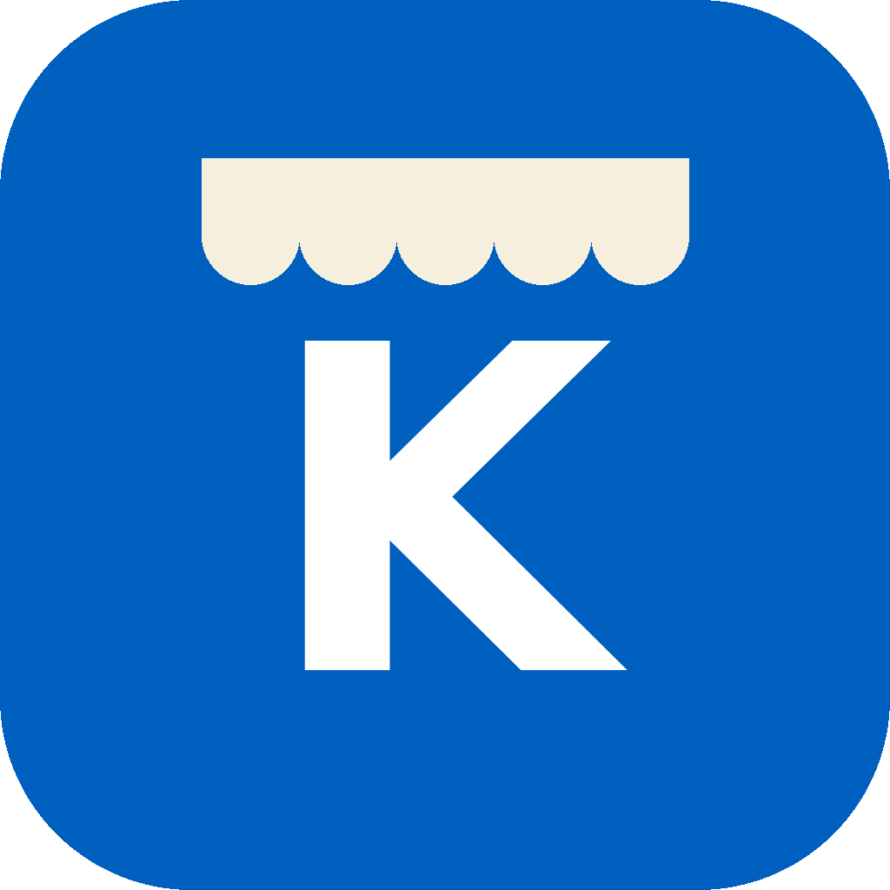

Pedí tu comida del kiosco de la escuela desde el celular y retirala sin hacer fila.
Descargar app para Android Archivo APK · AndroidArmás tu pedido desde el celular antes del recreo y lo recogés en el kiosco cuando te toca.
Los productos están agrupados por categoría, con precio y stock disponible.
Un asistente te ayuda a elegir productos y puede agregarlos o quitarlos de tu carrito si se lo pedís.
Registrate con tu email o ingresá con Google, con verificación de correo y cambio de contraseña.
Instalá KiosGo! en tu celular Android descargando el archivo APK. Si el celular pide permiso para instalar apps de origen desconocido, aceptalo solo para esta instalación.
Descargar APK